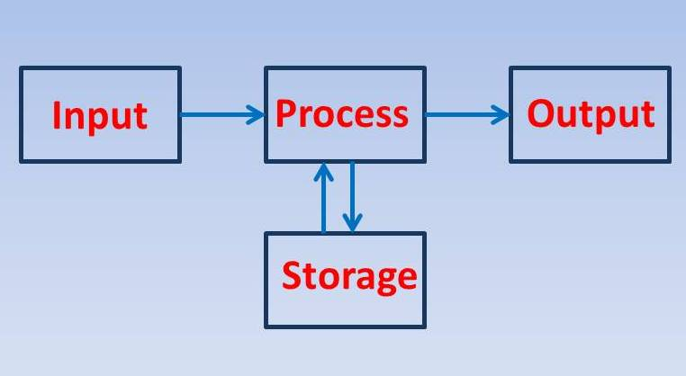

Een computer werkt met het binaire stelsel. Elke 1 en 0 staat voor "aan" of "uit". De combinatie van enen en nullen vormt een code.
In elke computer zit een moederbord. Dat is een vierkante plaat die alle onderdelen van de computer met elkaar verbindt.
Om een computer te laten werken zijn er drie dingen nodig.
De invoer wordt gedaan door bijvoorbeeld een muis, camera, microfoon of toetsenbord. We gebruiken deze om informatie naar de computer te sturen.
De input die is binnengekomen wordt hier verwerkt door een processor (ook wel CPU; central processing unit, of centrale verwerkingseenheid genoemd). De informatie wordt omgezet naar binaire code, zodat de computer weet wat het moet doen. Die informatie wordt daarna bewerkt door de aplicaties op de computer om een uitput te krijgen.
De bewerkte gegevens worden daarna naar tot uiting gebracht in bijvoorbeeld een verandering op het beeldscherm, of de activatie van de speaker.
Met opslag wordt het opslagapparaat/geheugen bedoelt, waar alle informatie van je computer wordt opgeslagen. De hoeveelheid informatie die je kan opslaan wordt gemeten in Megabytes (MB), Gigabytes (GB) en Terabytes(TB). Je hebt de primaire en secundaire opslag:
Random Access Memory (RAM) is de primaire opslag. Het RAM slaat tijdelijk je gegevens op. Door het RAM is het mogelijk om meerdere dingen tegelijk te doen op je computer. Het nadeel van RAM is dat als je bijvoorbeeld de computer uit zet, je alles dat opgeslagen was op je RAM weer kwijt bent. Omdat het RAM de computer op willekeurige volgorde toegang kan verlenen aan de gegevens, werkt het RAM veel sneller dan de secundaire opslag.
De secundaire opslag slaat langdurig gegevens op. Alle bestanden die je op de computer maakt of download worden hier opgeslagen. Er zijn twee mogelijke secundaire opslagapparaten: de harde schijf (HDD) en de solid state drive (SSD), waarbij de SSD de nieuwste van de twee is. Secundaire opslagapparaten kan je bijna altijd uit de computer verwijderen en op een andere computer zetten. Hierdoor is het ook mogelijk om je opslag te vervangen of uit te breiden.
Er zijn ook opslagapparaten die het niet nodig hebben om vast te zitten aan een computer zodat de computer kan functioneren. Een USB-stick is een voorbeeld hiervan. Je doet de USB-stick in een USB-poort zodat het verbinding heeft met de computer en daarna is het mogelijk om informatie van de harde schijf (of SSD) over te zetten naar de USB-stick. Externe opslag is een handig hulpmiddel om informatie van computer naar computer te krijgen zondar dat het via het interrnet gaat. Het is dan ook makkelijk te vervoeren door het kleine formaat. Een USB-stick van nu kan tot wel 2TB aan informatie opslaan.